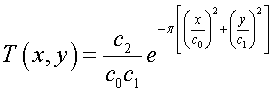

Specifies a beam irradiance or intensity apodization.
Syntax 1
USERAPOD POS [ fcn ] [ c c' c" ... ] [ 'string' ]
APODIZE DIR OFF
OFF
Syntax 2
USERAPOD POS c c'
APODIZE DIR
[ e p [ f ] [ PLOT ] ]
PROD
[ e' p' [ f' ] ]
:
| Option | Description |
|---|
| POS or DIR | type of apodization |
| fcn | name of the apodization function to be applied to the set of rays |
| c c' c". . . | up to 50 coefficients used to define apodization function |
| OFF | turn the currently defined apodization function off |
| e f | measured energy flux |
| p | spatial or direction cosine coordinate |
| PLOT | stentry>creates a default distribution file (BRO009.DAT) |
| PROD | flag to use the product of the two orthogonal profiles instead of the
weighted sum |
Remarks
- Users can define their own POSitional and/or DIRectional apodization function
to be applied to a set of rays or beams created in a GRID or
EMITTING surface command. This is done by either using the
given $FCN function, fcn or rewriting the
Fortran function, USERAPOD and relinking the program.
- Turns on or OFF the use
of the currently defined apodization function by the program.
- APODIZE operates
immediately on all the currently selected or considered rays and therefore, can be
used before or after a TRACE.
- APODIZE is a ray
modifier that apodizes ray distributions of all currently selected and/or considered
rays before or after a ray trace. It is less constrictive than the USERAPOD command. It may be used to angularly apodize rays through a
filter or at a detector.
- USERAPOD is only applied
to rays when they are created. Therefore, it should be placed prior to the ray
definition commands for which it is applicable. Once entered, however, it modifies
all subsequent ray data until turned OFF.
- USERAPOD POS only
applies to the following ray creation commands: GRID ELLIPTIC, GRID HEX,
GRID POLAR, GRID RECT, GRID WINDOW, SOURCE POS GRID, SOURCE DIR GRID, and
EMITTING DISK/RECTANGLE
- USERAPOD DIR only
applies to the following ray creation commands: SOURCE DIR GRID, EMITTING
DISK/RECTANGLE, EMITTING ENTITY or OBJECT, and
EMITTING DATA plane.
-
If fcn is specified, the in-plane, 2D POSitional or DIRectional coordinates are passed
in the _1 and _2 variables. The 50 coefficients c c'... are
passed in the _3 _4 ... _52 variables. The last entry in the $FCN definition of fcn is used as the apodization
flux scaling factor. For example, to define and use a Gaussian apodization
(identical to the default one discussed below):
$FCN APOD _5*GAUS[_1/_3]*GAUS[_2/_4]/(_3*_4)
:
USERAPOD POS APOD ...
:
GRID ...
SOURCE ...
- Otherwise, up to 50 coefficients (c c' ...) and the 'string' can be passed to the
USERAPOD/APODIZE command where the default apodizing function
is a Gaussian apodization of the form (using the Z axis as the direction of
propagation):

Therefore, co and c1 are
the semi-major widths of the Gaussian envelope. The c2 is the
total flux in the beam, assuming it is not appreciably truncated by the finite
size of the grid or emitting surface and that the default POS
irradiance or DIR radiance distribution is unity.
- Only a rotationally symmetric apodization
may be used with the GRID POLAR.
- The x and y in the T(x,y) equation become direction cosines if the DIR option
is used.
- With the second syntax, a table of measured
energy flux in the two orthogonal grid directions e,f versus
POSition or DIRection cosine p can be entered to apodize the grid.
- The values of p are
entered in ascending order (0 < p < 1, the first quadrant in direction cosine
space). ASAP linearly interpolates to obtain intermediate flux values. The remaining
three quadrants are mapped by reflection across the coordinate axes.
- The c0 and c1 values are used to scale p into the two coordinate
values at the GRID or EMITTER plane. If no
scaling is desired, enter 1 1 for c0 and c1.
- Using the PLOT option
with the second syntax creates a default distribution file (BRO009.DAT) for future
plotting by the DISPLAY command (the current PIXELS setting controls the resolution).
USERAPOD Examples